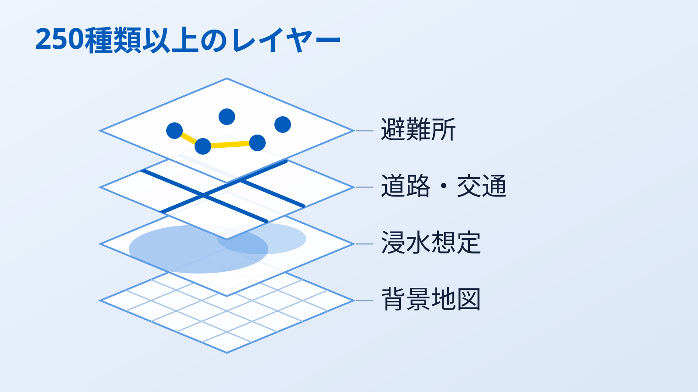
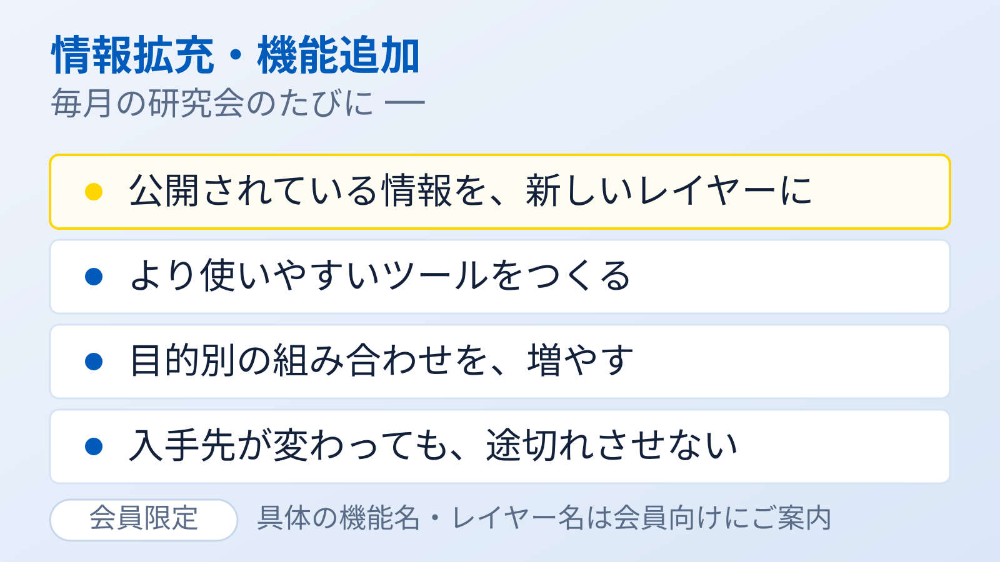
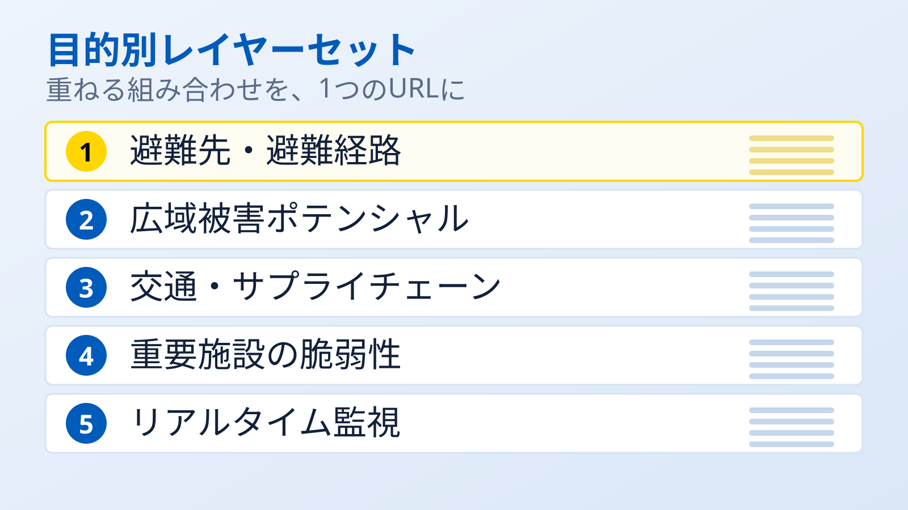
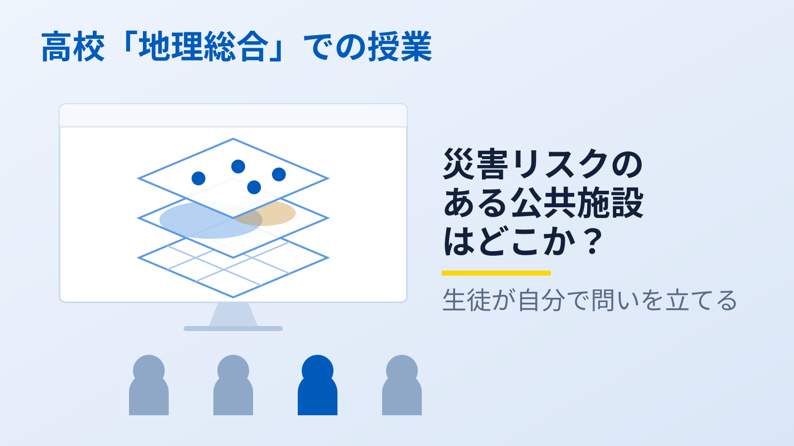
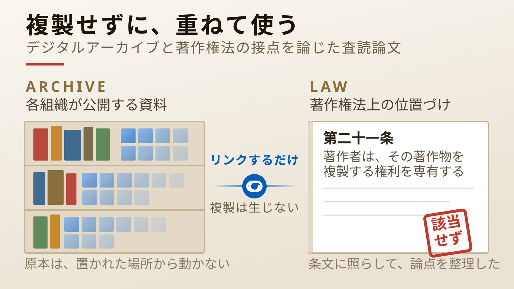
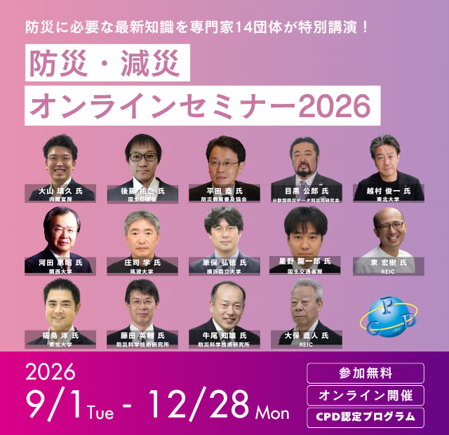

ハイパーレイヤリングマップ
各組織のサーバに置かれたままの地図を、閲覧者のブラウザの上で重ね合わせるオープンソースのGIS。この方式をハイパーレイヤリングと呼びます。250種類以上の防災データレイヤーを実装しており、中央のデータベースを持たないため、どこかが止まっても全体は止まりません。
ハイパーレイヤリングマップ公式サイトハザードマップ、ライフライン、道路閉鎖、避難所。研究機関や行政、企業が使う災害情報システムに、 防災に役立つデータはすでに数多く存在します。 それでも現場で使われないのは、技術ではなく、集約を前提とした仕組みと、それを支える制度に理由があります。 本研究会は、データを持つ側と使う側、制度をつくる側と問い直す側が同じ円卓について、その隘路を具体的に解いていく場です。
議論だけの会ではありません。動くもの、使えるものを持ち寄って検証しています。

各組織のサーバに置かれたままの地図を、閲覧者のブラウザの上で重ね合わせるオープンソースのGIS。この方式をハイパーレイヤリングと呼びます。250種類以上の防災データレイヤーを実装しており、中央のデータベースを持たないため、どこかが止まっても全体は止まりません。
ハイパーレイヤリングマップ公式サイト
ウェブで公開されている情報を、地図に重ねられるレイヤーにする。表やPDF、地図の画像であっても、重ねられるかたちへ。より使いやすいツールの開発も、毎月の研究会のたびに進めています。

「何を重ねればよいか」を毎回考えなくて済むよう、目的別の組み合わせを1つのURLにまとめています。避難先・避難経路／広域被害ポテンシャル／交通・サプライチェーン／重要施設／リアルタイム監視の5種を整備中です。
実例を見る 令和8年 熊本地震のレイヤーセット
浸水・土砂災害に公共施設を重ね、「災害リスクのある公共施設はどこか」を生徒自身に考えさせる授業を実施しました。データを読み解く力を、地域で学び地域で働く人へ手渡す取り組みです。

地図データを重ねて使うとき、著作権法上の複製にあたるのかという論点があります。研究会メンバーによる査読論文が、複製を伴わないリンク表示であれば複製にあたらないことを整理し、運用上の留意点とともに示しました。デジタルアーカイブ学会誌に掲載されています。
三浦伸也・高木悟・福井健策・目黒公郎・柴山明寛・柴田一雄・瀧田佐登子「ハイパーレイヤリングによる地図データの防災活用と著作権法上の課題：複製を伴わないリンク表示の合法性と運用上の留意点」デジタルアーカイブ学会誌 第10巻3号、2026年、e22–e32頁。
論文を読む（DOI）
「分散する防災データをブラウザでつなぐ ── Web地図「SVGMap」の可能性と実践」と題し、研究会メンバーがリレー形式で登壇します。2026年9月1日（火）〜12月28日（月）配信、参加費無料（事前登録制）。主催は防災ログ実行委員会です。
視聴登録はこちら（防災ログ特設サイト）2022年3月の発足以来、毎月集まって議論を重ねてきました。開催は通算49回。 名称の変遷は、そのまま考え方の成熟を表しています。
「中央サーバに集めない地図」という技術の旗印のもとに、有志が集まりました。
技術の名から目的の名へ。「集めない」ことへの対抗ではなく、「分散したまま重なり合う」という考え方に軸足を移しました。
研究会の議論を社会実装につなぐ法人が発足。研究会と協議会の二層で活動しています。
レイヤーセットの整備、自治体・企業での適用、高校での授業実践、オンラインセミナーの配信。議論の成果を外に出す段階に入っています。
大学・研究機関、法学、通信、自治体、エネルギー、物流、文化施設、オープンソースコミュニティ。 データを持つ者と使う者、制度をつくる者と問い直す者が、同じ円卓についています。
参加分野
組織会員は規約に基づき順次掲載します。個人会員の氏名は、ご本人の希望に応じて掲載します。
毎月1回、東京大学生産技術研究所での対面とオンラインの併用で開催しています。 分野は問いません。データを持っている方も、使いたい方も、制度に関わる方も歓迎します。
お申し込みの前に
入会には審査があります
本研究会は、行政や企業の実務者が、所属機関の実情にも踏み込みながら率直に議論する場です。 規約で守秘義務を定めており、その前提を保つために入会審査を設けています。 入会申込書のご提出後、世話人会の審査を経て、会長が承認した場合に会員となります（規約第6条）。 研究会の趣旨に反する目的でのご参加はお断りしています（規約第9条・第11条）。
対面での参加人数には限りがあります
会場（東京大学生産技術研究所）の広さの都合により、対面でご参加いただける人数には限りがあります。 定例会はオンラインでも開催しており（規約第19条）、オンラインでのご参加をご案内する場合があります。 あらかじめご了承ください。
A Copernican Turn in Disaster Data
なぜ「集めない」のか。フェーズフリー防災、防災OSINT、リスキリング、地学地職—— この研究会が掲げる四つの着眼点と、その背景にある世界の見方を、ひとつづきの物語としてまとめました。
わたしたちの考え方を読む